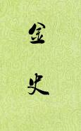

| 历史史籍 > |
| 金史 |
| 作者：脱脱 主编 |
|
金史，纪传体断代史，本纪19卷、志39卷、表4卷、列传73卷，共135卷。记载了上起金太祖完颜阿骨打出生（1068年），下至金哀宗天兴三年（1234年）蒙古灭金，共166年间的历史。《金史》是元修三史之一，元顺帝至正三年（1343年）开始，翌年十一月告成，前后用了不到一年的时间。 《金史》由脱脱等主持编修，具体参加修纂的有沙剌班、王理、伯颜、赵时敏、费著、商企翁、铁木尔塔识、张起岩、欧阳玄、王沂、杨宗瑞等，其中欧阳玄的贡献最为突出，他制订《金史》撰修的发凡举例，书中的论、赞、表、奏皆他属笔。历代对《金史》的评价很高，认为它不仅超过了《宋史》、《辽史》，也比《元史》高出一筹。 [2019/3/16，重新整理] |
 |